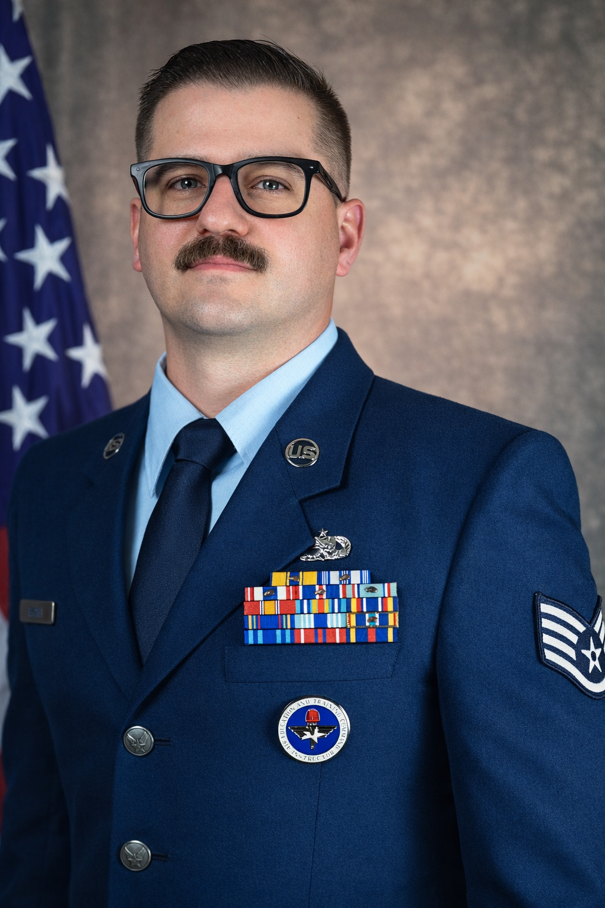

Welcome
Welcome to my professional website. This space serves as a central hub for my work, experience, and development as an Air Force instructor preparing to transition into instructional design and corporate training.
Here, you'll find an overview of where I am today, the direction I am heading, and the skills and experiences I am building along the way. This site is designed to reflect both my current role and my long-term goal of creating effective, performance-driven learning environments.
This platform is intended to function as both a professional overview and a working portfolio of my development. Over time, it will continue to grow alongside my experience and career progression.

Where I Am Now
My current work centers on instruction, leadership, communication, and technical training in a high-responsibility Air Force environment. I am responsible for developing and delivering training while mentoring Airmen to perform effectively under pressure.
This experience has strengthened my ability to guide learners, structure complex information, and create practical, performance-focused learning experiences that support both individual growth and mission success.
Career Direction
My long-term goal is to apply my experience in learning-focused roles, particularly in instructional design, workplace training, and leadership development. I am working toward creating training that is practical, engaging, and directly tied to real-world performance.
I aim to continue developing as a professional who can design, deliver, and improve learning experiences that drive both individual growth and organizational effectiveness.